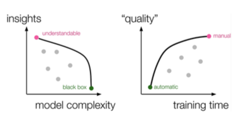

Challenges in Evaluating Interactive Visual Machine Learning Systems | HCI Stuttgart


Authors. Nadia Boukhelifa, Anastasia Bezerianos, Remco Chang, Chris Collins, Steven Drucker, Alex Endert, Jessica Hullman, Chris North, Michael Sedlmair
Venue. CG&A (2020)
Abstract. In interactive visual machine learning (IVML), humans and machine learning algorithms collaborate to achieve tasks mediated by interactive visual interfaces. This human-in-the-loop approach to machine learning brings forth not only numerous intelligibility, trust, and usability issues, but also many open questions with respect to the evaluation of the IVML system, both as separate components, and as a holistic entity that includes both human and machine intelligence. This article describes the challenges and research gaps identified in an IEEE VIS workshop on the evaluation of IVML systems.